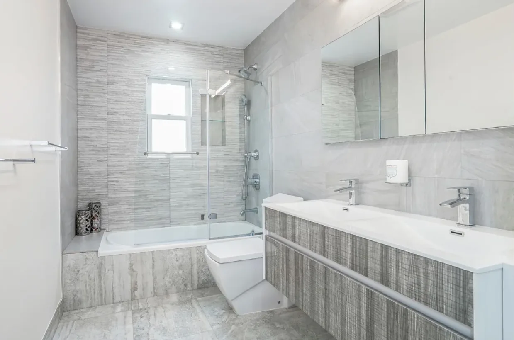
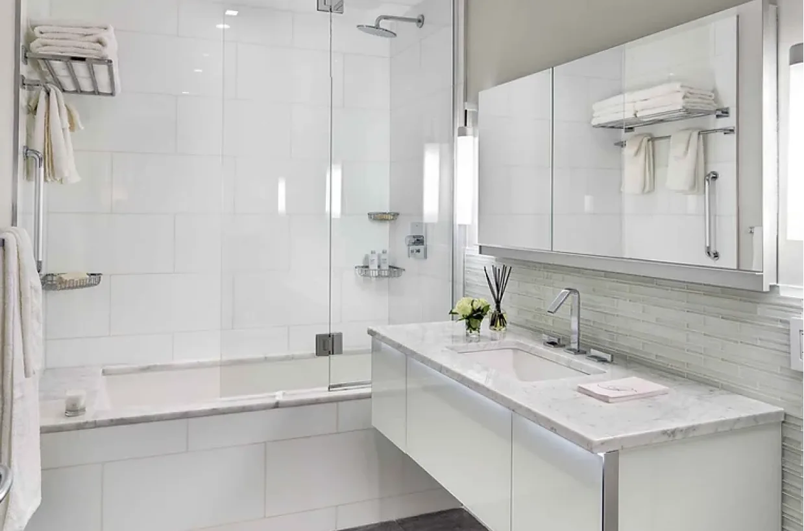

Layout & design coordination
Reviewing circulation, storage, cabinet configurations and renovation priorities.

The best kitchens balance everyday function with a strong sense of place. Prime Build helps clients bring together the layout, cabinetry, surfaces and finishing details that make a kitchen inviting and practical.
Good kitchen planning considers how the space is used: storage, circulation, preparation, entertaining and easy maintenance. The goal is not simply to choose materials, but to make them work well together.
Cabinetry alignment, countertop transitions, backsplash edges, lighting placement and appliance clearances all affect the finished result. We pay attention to those connections from planning through installation.
Tell us about your project
Prime Build / Selected workWe consider both the big-picture plan and the small decisions that affect the final outcome. Actual scope is reviewed individually for each property.
Reviewing circulation, storage, cabinet configurations and renovation priorities.
Coordination of cabinetry, shelving and storage solutions suitable for the available space.
Material selections, transitions, finish edges and installation sequencing.
Coordinating floors, paint, trim and surface finishes for a cohesive result.
Coordinating placement, specifications and handoffs to appropriately licensed trades.
Scheduling, trade coordination, materials and punch-list review for a clear renovation process.
Prime Build is licensed by NYC DCWP as a Home Improvement Contractor. When work requires separate trade licenses, registered design professionals, permits, or approvals, those requirements are addressed according to the project.
Great work starts with a productive conversation and clear expectations. Here's how we begin.
Photos, basic dimensions and what isn't working help clarify the starting point.
We discuss layout goals, finishes, appliances, likely sequencing and any approvals.
Coordination of cabinetry, surfaces and licensed specialists supports a cohesive finish.
These photographs illustrate Prime Build's existing portfolio. Project details and the exact scope of individual work are available on request.
Every property and project is different. These answers offer a starting point for the conversation.
Yes. We can discuss compact kitchen improvements and layouts suitable for NYC apartments and condos.
We can discuss options and coordinate project planning. Changes involving plumbing, gas or electrical work require the appropriate licensed professionals and approvals.
A few kitchen photos, approximate dimensions, desired materials or inspiration images, target timeline and budget range are useful.
Tell us about your property, what you want to accomplish, and your ideal timeline. We will review the details and follow up.
Prime Build
3219 Richmond Rd, Unit 1, Staten Island, NY 10306
primebuild.nyc@gmail.com